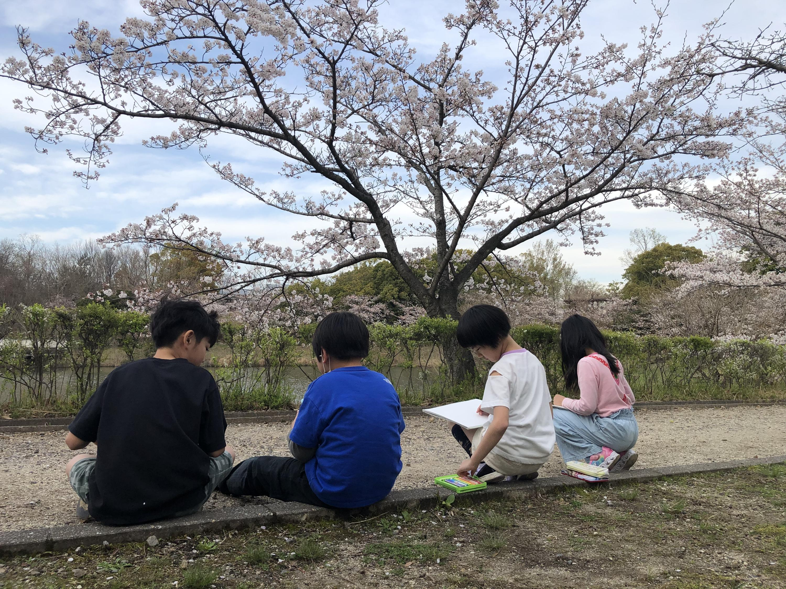
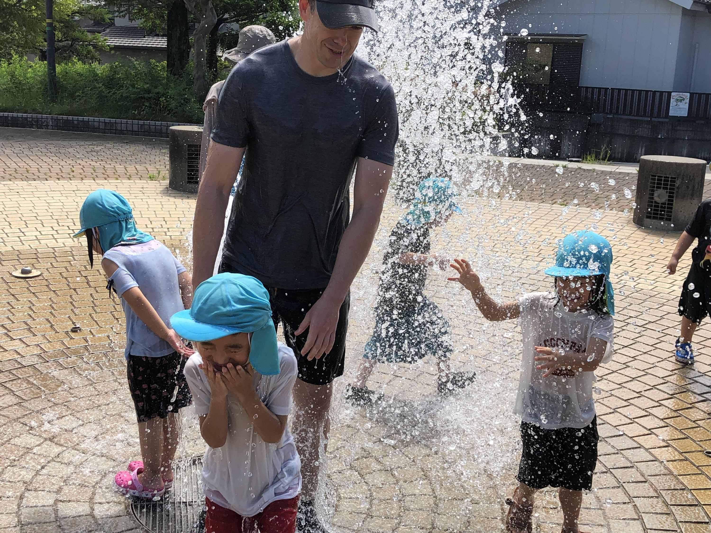
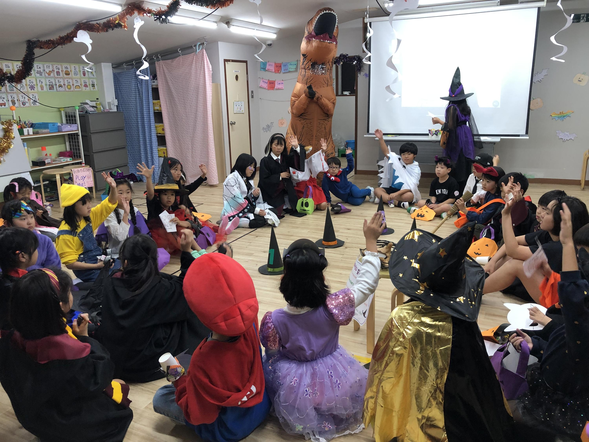
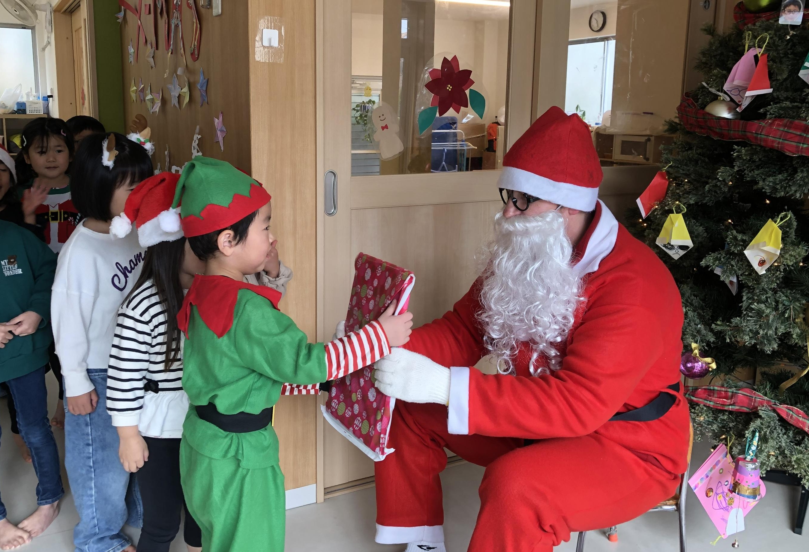

英語が「勉強」になる前に、生活のことばへ。
歌、遊び、制作、外遊び、食事の時間まで、日常の中で自然に英語へ触れます。


Sakurakids international
サクラキッズインターナショナルは、子どもたちが英語と友だちになり、自分らしく表現する力を育むグローバルスクールです。このページでは、一般サイトには載せきれない検討材料を、見学・お問い合わせ後のご家庭向けに整理しています。
Why families choose us
歌、遊び、制作、外遊び、食事の時間まで、日常の中で自然に英語へ触れます。
子どもの気持ちに寄り添いながら、異文化にひらかれた環境をつくります。
プリスクール、アフタースクール、長期休暇プログラムなど、成長段階に合わせて選べます。
Tuition and fees
料金はすべて税別です。教材費は年会費に含まれますが、テキストは実費負担です。
対象: 3歳から年長
月額 36,000円から
8:30から18:30まで、生活スタイルに合わせて4つの時間帯から選べます。
| コース | 時間 | 週2日 | 週3日 | 週4日 | 週5日 |
|---|---|---|---|---|---|
| ショートタイム | 8:30から13:00 | 36,000円 | 44,000円 | 52,000円 | 59,000円 |
| デイタイム | 8:30から15:00 | 45,000円 | 56,000円 | 66,000円 | 77,000円 |
| ロングタイム1 | 8:30から17:30 | 54,000円 | 67,000円 | 80,000円 | 94,000円 |
| ロングタイム2 | 8:30から18:30 | 58,000円 | 72,000円 | 86,000円 | 100,000円 |
初期費用: 入園金 50,000円、年会費 10,000円、入園備品 10,000円。
給食費: 週2日 4,000円、週3日 6,000円、週4日 8,000円、週5日 10,000円。
幼児教育・保育の無償化について
本園では保育無償化の適合園となっております。記載の料金は無償化適用前の金額であり、無償化の対象となる場合は、補助額を差し引いた金額が保護者様の実質負担額となります。
対象: 年少から小学生
月額 45,000円から
月曜日から金曜日の間で設定日を選択。英語環境で放課後を過ごします。
| コース | 時間 | 週3日 | 週4日 | 週5日 |
|---|---|---|---|---|
| アフタースクール | 13:30から18:30 | 45,000円 | 50,000円 | 54,000円 |
| 休暇中ロングコース | 8:30から18:30 | 72,000円 | 86,000円 | 100,000円 |
| 送迎利用料 | 片道走行距離3km以内 | 4,800円 | 6,400円 | 8,000円 |
初期費用: 入園金 30,000円、年会費 10,000円、入会備品 7,000円。
スポット利用: ショートコース 5,000円、ロングコース 8,300円、給食 600円。
AfterSchool 送迎対応について
現在対応している学校・園は以下の通りです。


Annual events

入園・進級、お花見、Easter、母の日、おやつ遠足など、安心して園生活を始める季節です。

水遊び、七夕、Summer event、夏祭り。体を動かしながら、英語で伝える楽しさを育みます。

オープンデー、保護者懇談会、祖父母参観日、運動会、Halloweenなど、成長を感じられる機会が続きます。

Speech contest、Christmas、書初め、School Play、親子遠足、卒園式へ。積み重ねた力を表現します。
在園児保育開始、お花見、新入園児保育始め、Easter、新入園児通常保育開始。
母の日、おやつ遠足、防災訓練。
JETテスト、Mangoクラス園外活動、父の日。
水遊び活動開始、七夕まつり、Mangoクラス水遊び遠足、不審者訓練。
Summer event、お盆特別休み、防災訓練、夏祭り。
オープンデー、JETテスト、保護者懇談会、祖父母参観日、交通安全講習。
来年度入園願書配布開始、運動会、東山動物園園外活動、ハロウィンパーティー。
新年度入会希望者面談、Mangoクラス消防署訪問、JETテスト。
Speech contest、クリスマス会、年末休園。
登園開始、書初め、たこあげ、カルタ取り大会。
節分まめまき、Valentine day、School Play、入園前説明会。
おひな祭り、海外留学保護者説明会、お別れ会、親子遠足、卒園式。
日程は年度初めの計画であり、変更になる場合があります。身体測定、お誕生日会、P.E.、水遊び、クッキング、サイエンスは毎月のお便り等で案内されます。
Teachers

オーストラリア出身。プリスクール Mango Class担当。子どもたちの楽しく遊ぶ姿、成長する姿を見るのが大好きな先生です。

日本・長久手出身。プリスクール Mango Class担当。留学経験を活かし、子どもたちが笑顔で挑戦できる時間を大切にしています。

イギリス出身。アフタースクール Elementary Class担当。子どもたちは個性豊かで楽しい子たちばかり！子供たちと遊ぶことはとても楽しい！。
Next step
ご家庭の生活リズム、英語経験、希望曜日を伺います。
利用コース、開始時期、延長利用などを具体化します。
必要書類をご案内し、初回登園・初回参加まで伴走します。
Contact
0561-76-9149
電話受付: 月曜日から金曜日 9:00から17:00